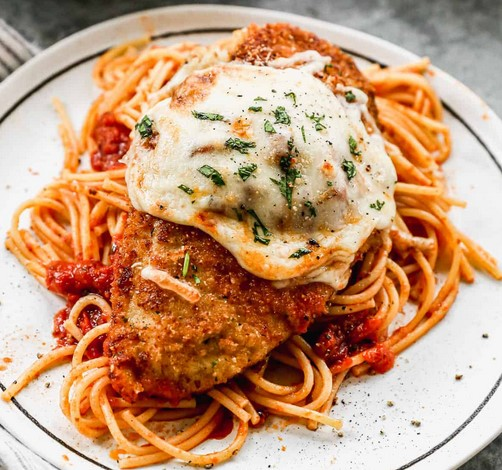

Chicken Parmesan Recipe

Photo of Delicious Chicken Parmesan
This chicken Parmesan recipe is a crowd-pleaser. It features tender chicken cutlets smothered in marinara sauce and melted cheese.
Ingredients
- Chicken breast: 4 boneless, skinless chicken breasts
- Breadcrumbs: 1 cup of breadcrumbs
- Grated Parmesan cheese: 1 cup
- Egg: 1 large egg, beaten
- All-purpose flour: 1/2 cup
- Italian seasoning: 1 teaspoon
- Salt: 1/2 teaspoon
- Black pepper: 1/4 teaspoon
- Marinara sauce: 2 cups
- Shredded mozzarella cheese: 2 cups
- Olive oil: 2 tablespoons
- Fresh basil leaves: For garnish
Steps
- In a shallow dish, mix together the breadcrumbs, grated Parmesan cheese, Italian seasoning, salt, and black pepper.
- Dredge each chicken breast in flour, dip it in beaten egg, and then coat it in the breadcrumb mixture, pressing gently to adhere.
- In a large skillet, heat olive oil over medium heat. Cook the breaded chicken breasts until golden brown and cooked through, about 4-5 minutes per side.
- Preheat the oven to 375°F (190°C). Spread a thin layer of marinara sauce on the bottom of a baking dish.
- Arrange the cooked chicken breasts in the baking dish. Top each chicken breast with more marinara sauce and shredded mozzarella cheese.
- Bake in the preheated oven for 15-20 minutes, or until the cheese is melted and bubbly.
- Garnish with fresh basil leaves before serving.
- Serve the chicken Parmesan with pasta or a side of your choice.